На цій сторінці ви знайдете інформацію про те, як розпізнати кібербулінг, як діяти у складній ситуації та куди звертатися по допомогу.
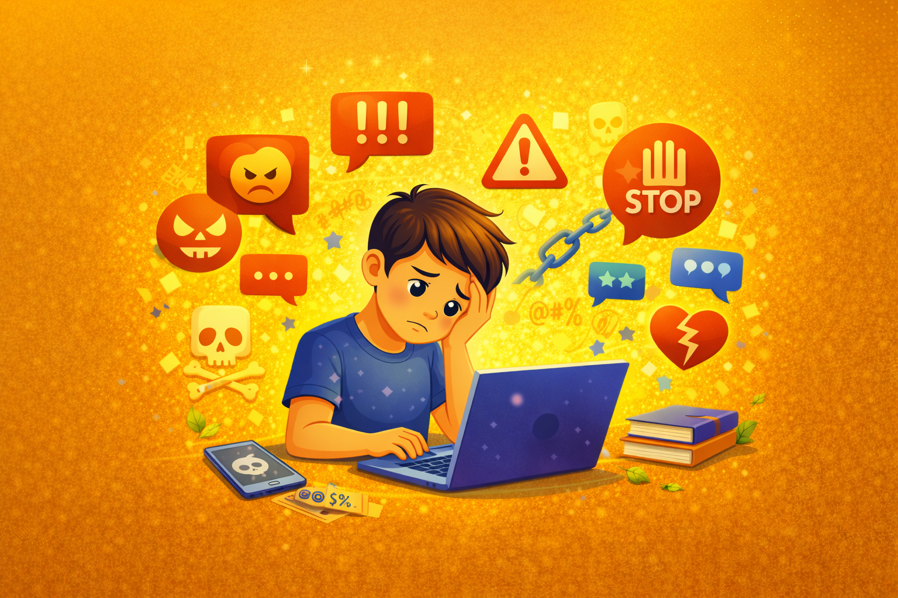
Кібербулінг — це форма психологічного насильства, яка відбувається з використанням цифрових технологій:
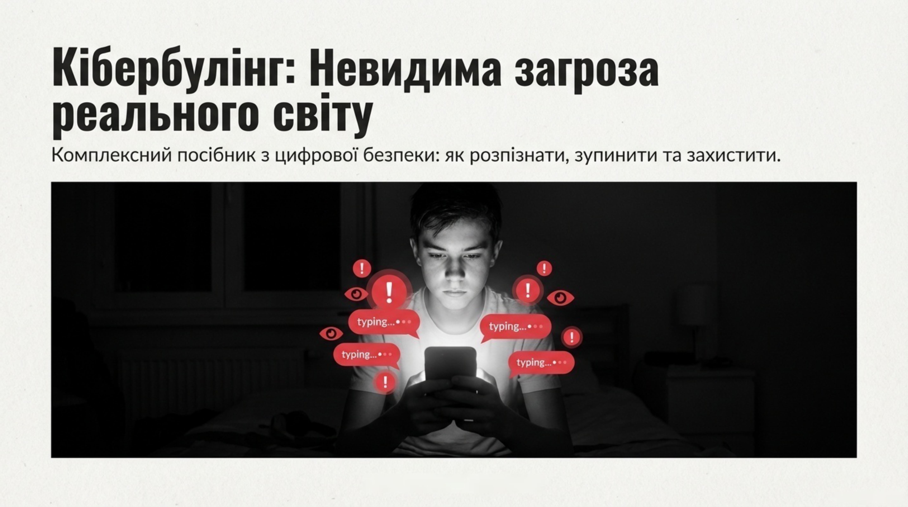
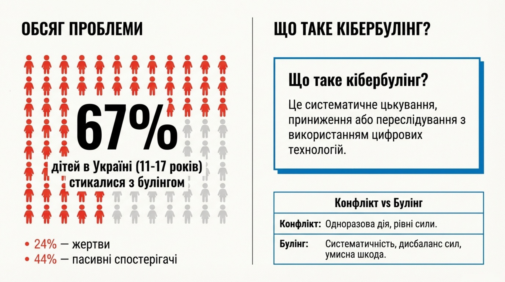
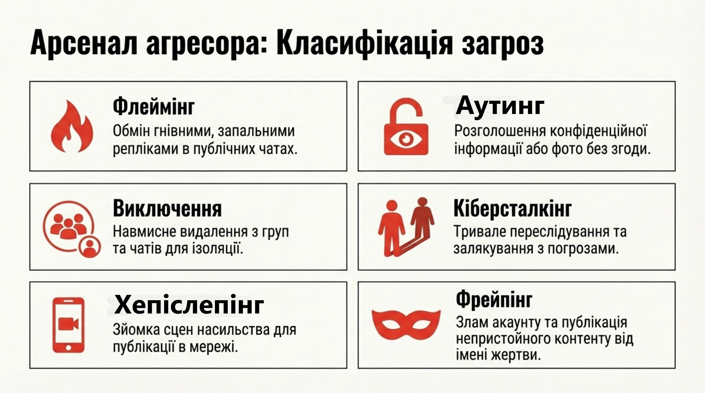
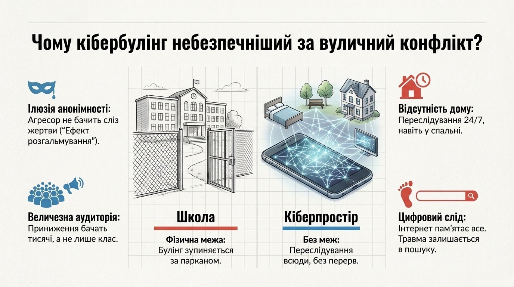
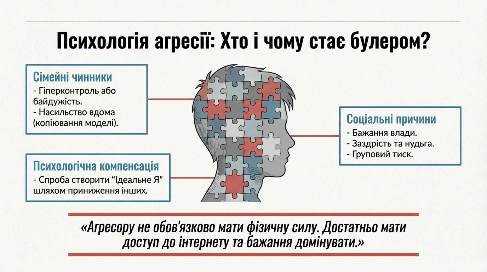
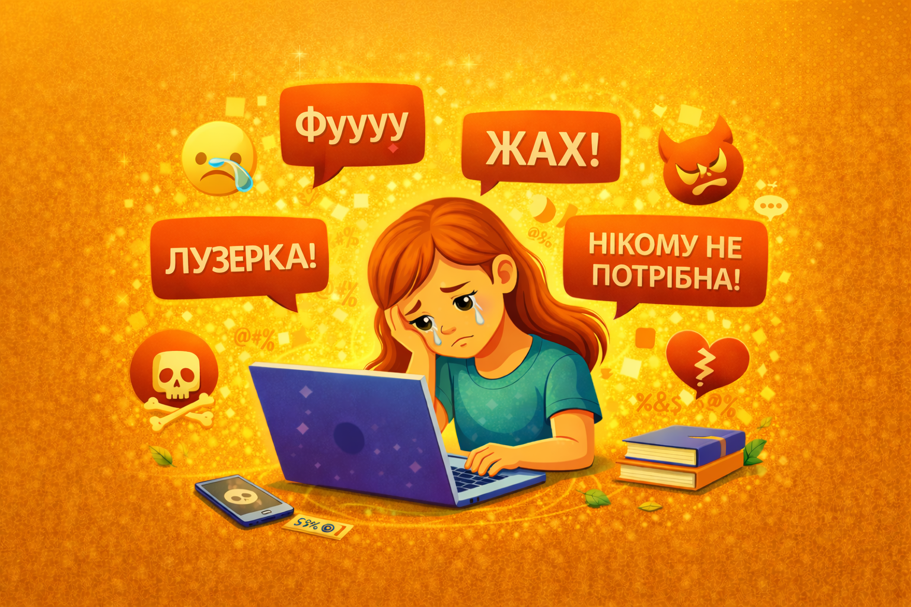
Образи є ключовим елементом психологічного та вербального булінгу, що полягає у словесному приниженні, залякуванні або поширенні образливих висловів. Вони часто спрямовані на те, що робить людину «інакшою»: на її зовнішність, вагу, особливості здоров’я, релігію, етнічну приналежність або навіть успіхи у навчанні.
У цифровому просторі образи набувають специфічних форм:
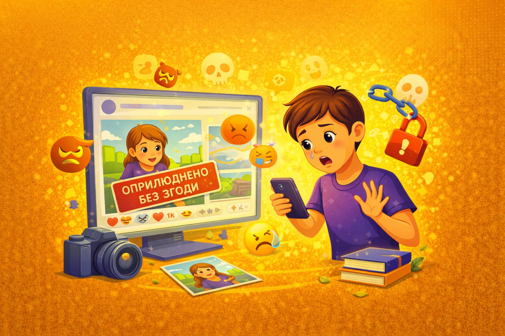
Публікація фотографій без згоди є однією з найбільш поширених та небезпечних форм кібербулінгу, що спрямована на приниження або залякування особи. Такі дії можуть мати різні прояви: від поширення принизливих чи несправедливих знімків до створення образливих стікерів або мемів із зображенням "жертви".
Видалити фото з інтернету повністю практично неможливо. Навіть якщо оригінал буде видалено, хтось може встигнути зробити скріншот і продовжувати поширення. Це створює довгострокові ризики для репутації.
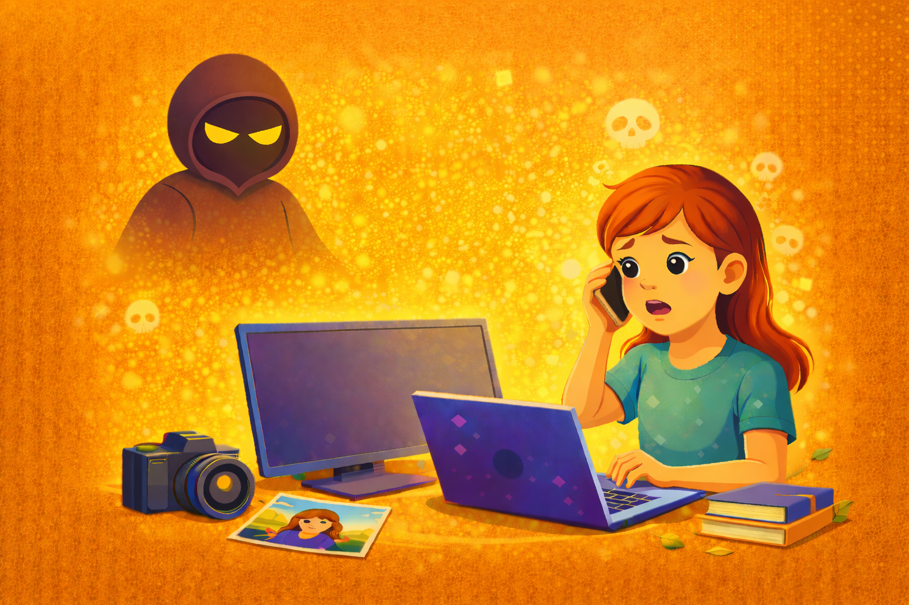
Погрозиє однією з основних ознак психологічного булінгу, що має на меті залякування дитини та нанесення їй психологічної травми.
Погрози можуть бути як прямими (наприклад, обіцянки фізичної розправи чи побиття), так і прихованими.
Окремим видом є шантаж, зокрема кібергрумінг, коли зловмисники погрожують оприлюднити конфіденційну інформацію дитини.
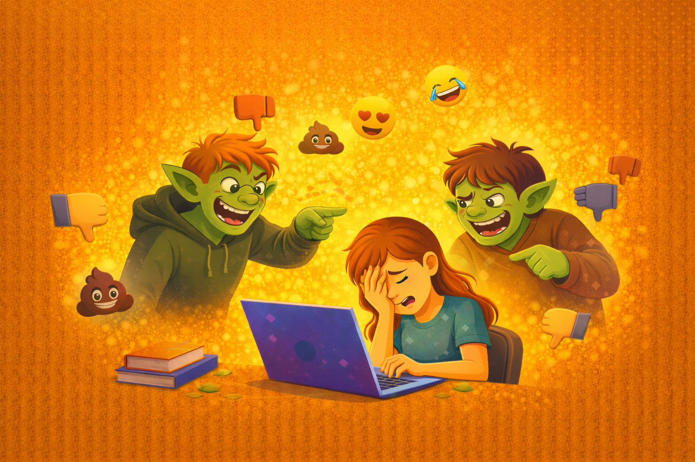
Тролінг — це одна з форм кібербулінгу, яка полягає в розміщенні провокаційних повідомлень або коментарів у мережі для того, щоб викликати у людини негативну емоційну реакцію, гнів або роздратування.
Найчастіше тролінг розгортається у публічних зонах інтернету: у соціальних мережах, на форумах, у чатах онлайн-ігор або дискусійних групах. На перший погляд він може здаватися суперечкою рівних сторін, але швидко перетворюється на нерівноправний психологічний тиск на жертву.
Тролі (булери) зазвичай діють навмисно, щоб привернути до себе увагу або самоствердитися за рахунок інших. Вони очікують на емоційну відповідь, і чим активніше жертва намагається захиститися чи сперечатися, тим більше це підживлює агресію.
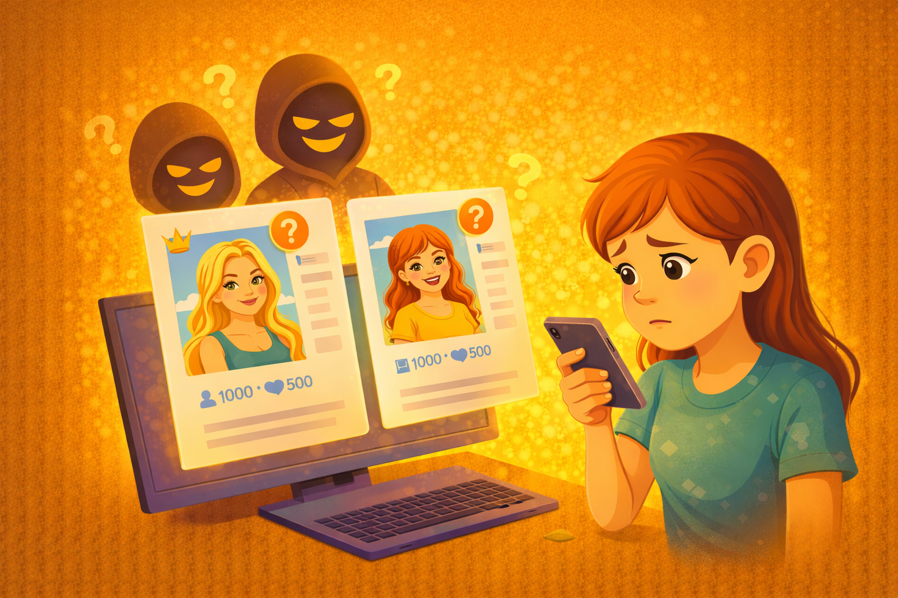
Створення фейкових акаунтів є однією з поширених форм кібербулінгу, яка дозволяє агресору діяти анонімно або маскуватися під іншу особу.
Кривдник може створити сторінку, використовуючи реальні фотографії та ім’я жертви, щоб від її імені писати образи іншим користувачам. Це призводить до того, що оточуючі починають уникати справжньої дитини, хоча вона не має відношення до цих повідомлень.
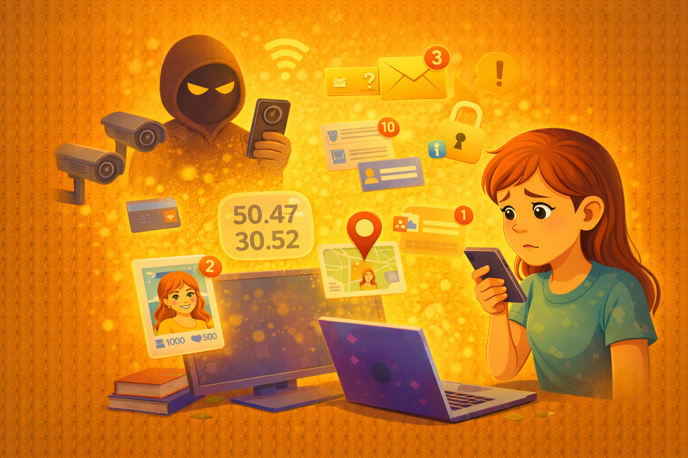
Кіберсталкінг (або онлайн-сталкінг) — це форма нав’язливого переслідування та цькування людини в інтернеті (переважно в соціальних мережах), що здійснюється за допомогою IT-технологій. Основною ідеєю цього явища є втручання в життя особи для створення психологічного тиску, моральних чи фізичних страждань або матеріальної шкоди
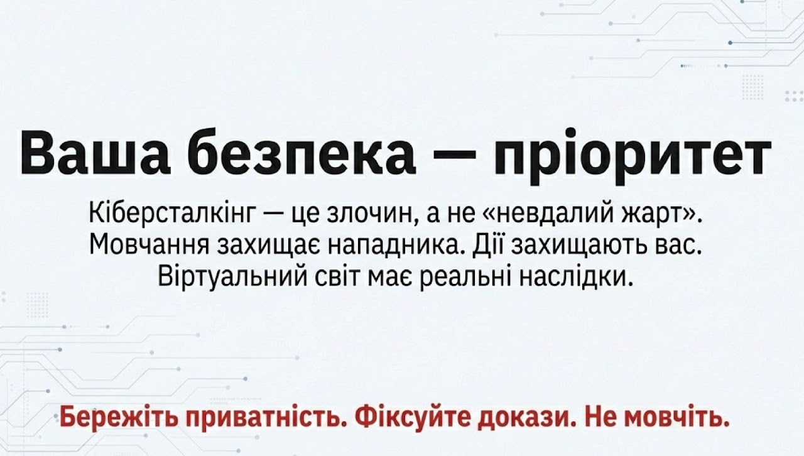
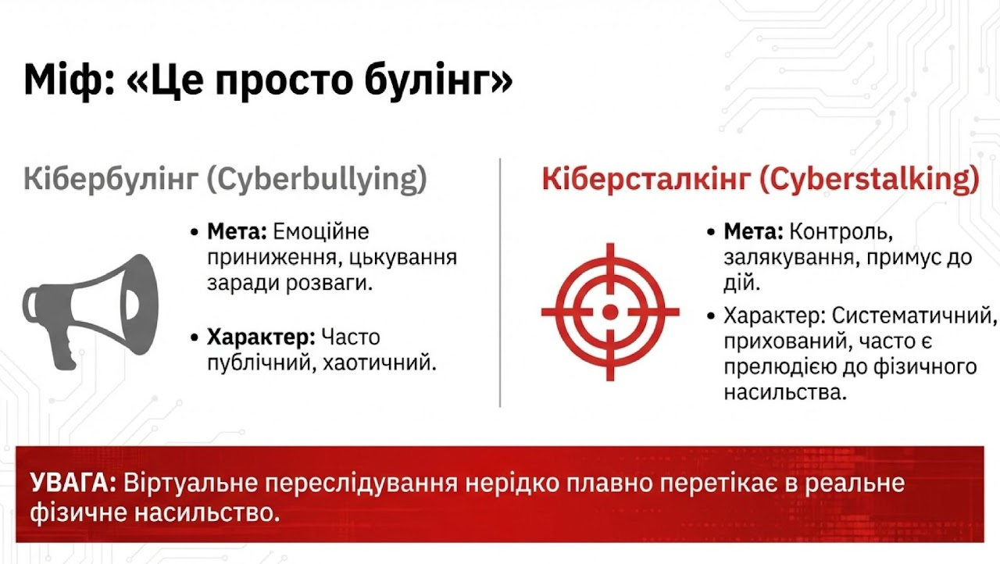
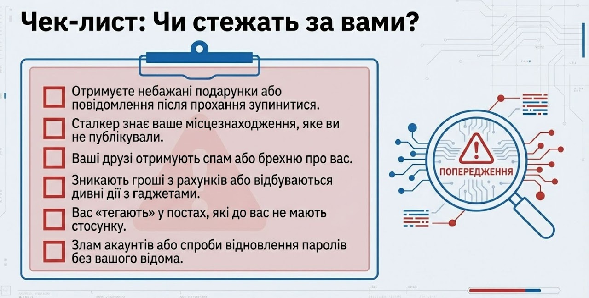